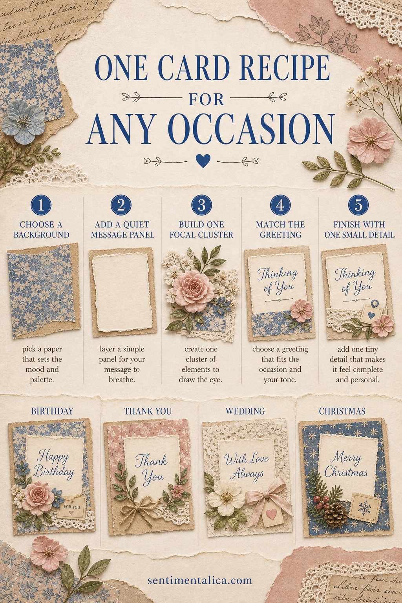
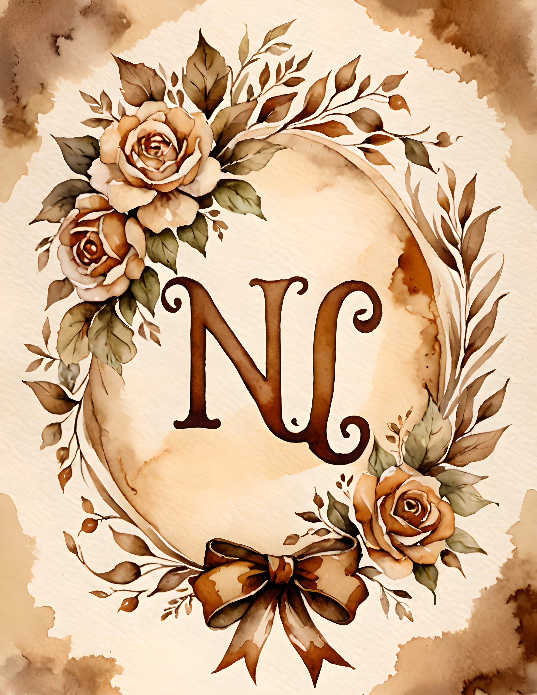

You do not need a different card design for every occasion. One balanced construction can become a birthday card, wedding card, thank-you note or Christmas greeting. Keep the structure the same and change the background, sentiment and final accent.

What you need
- Folded cardstock for the base
- One printable background
- Plain cream paper for the message panel
- Two or three small focal elements
- A printed or handwritten greeting
- Glue, scissors and one optional finishing detail
Step 1: Choose the background
Trim the printed paper 5–7 mm smaller than the card front so the cardstock becomes a neat border. If the print has a strong focal area, position it away from the center; the quieter space will hold the greeting.

Step 2: Add a quiet message panel
Cut a cream rectangle large enough for the greeting plus comfortable margins. Tear one edge for a journal-like finish or keep all four edges straight for a formal card. If the background remains visible through thin paper, mount the panel on a second piece of cardstock.
Step 3: Build one focal cluster
Place the cluster at a lower corner of the message panel. Use one main shape—a flower, bow, botanical or ticket—and one or two smaller supports. Overlap the panel slightly so the card feels connected, but keep the words clear.
Step 4: Match the greeting
For a birthday, choose brighter flowers and “Happy Birthday.” For thanks, use a simple bow and “Thank You.” For a wedding, keep the palette pale and add “With Love.” For Christmas, use evergreen, a snowflake or a dark blue paper accent. The construction stays identical.
Step 5: Finish with one small detail
Add one button, pearl, tiny tag, stitch line or ribbon knot. Stop after one. A finishing detail should make the card feel complete, not begin another layer of decoration.

Make a small batch
Prepare several bases and message panels at once, then leave the greetings unattached. When an occasion arrives, choose the appropriate words and one matching accent. This keeps handmade cards personal without requiring you to start from nothing every time.
Old Pages works especially well for this system because its warm neutral backgrounds can become romantic, seasonal or understated depending on the greeting placed over them.